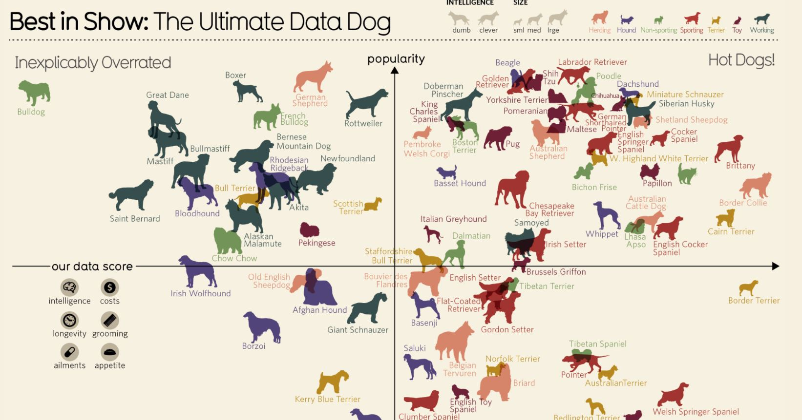

Blogs:
Blog 5

Blog 5

In this blog post, I will be looking at the Best in Show: The Ultimate Data Dog, on the information is beautiful site. The data in this chart shows the supposedly best dog out of all the breeds, using data about each individual breed. Many aspects are taken into consideration such as intelligence, costs, longevity, grooming, ailments, and appetite. Overall, the data in this chart is depicted clearly and is easy to read and understand. The creators have achieved beautiful data representation with the use of data visualisation in order to make a overall beautiful and easy to read chart. All these aspects under consideration this type of data reminds me of the big data profiling discussed by Janssens.
“The technological developments described above, which can provide a probability analysis of for example someone’s
medical condition or even predict someone’s thoughts and (future) behavior, creating the impression that the world
of mystery is slowly fading away” (Janssens, 2016).
This is the type of data that has been depicted for the different dog breeds. Based on this data, data profiling was
able to happen and calculate “who is best in show”. In terms of this, I am not fond of this kind of data as I feel as
though it subtracts from the randomness of life, as everything appears to be already mapped out based on analytics. I
also believe that it can ethically affect the way that people would view and interact with these certain dog breeds,
as with all the data depicted about them, conceptions and fixed ideas based on this data will change how people
interact with the breeds. This would be the same for big data profiling with humans.
“The largely invisible hyperconnectivity of data flows and the probability analyses that are associated with
this technology could change our conceptions and our encounter with the other as a fellow human being.” (Janssens, 2016).
The ethical standpoint on this type of data profiling is complex, as many types of opinions can be influenced based on
data presented. Ethically, this example of dog breeds might not be as serious and can be informative for most
people. However, I do believe that if this type of data and data profiling was applied to humans it could be
damaging to society. Therefore, ethical Implications must always be well considered.
References:
https://informationisbeautiful.net/visualizations/best-in-show-whats-the-top-data-dog/Janssens, L. (ed.) (2016) The art of ethics in the information society.